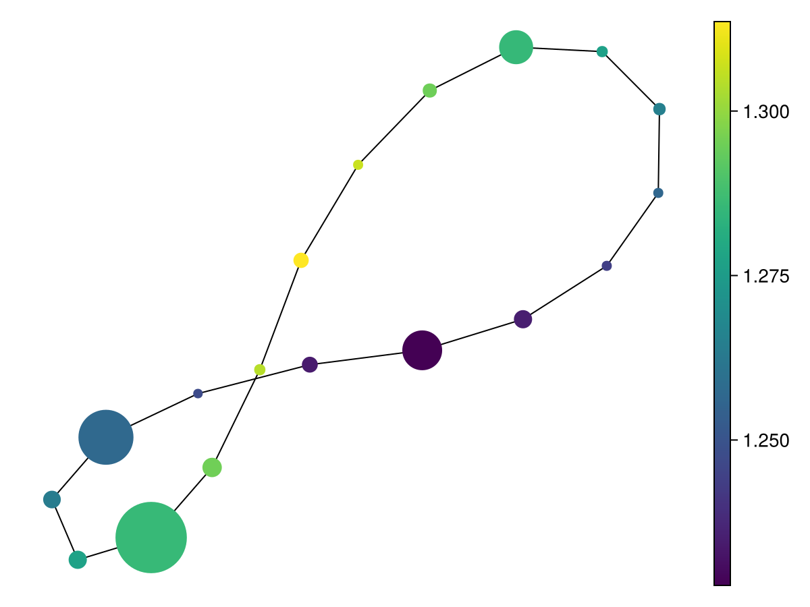
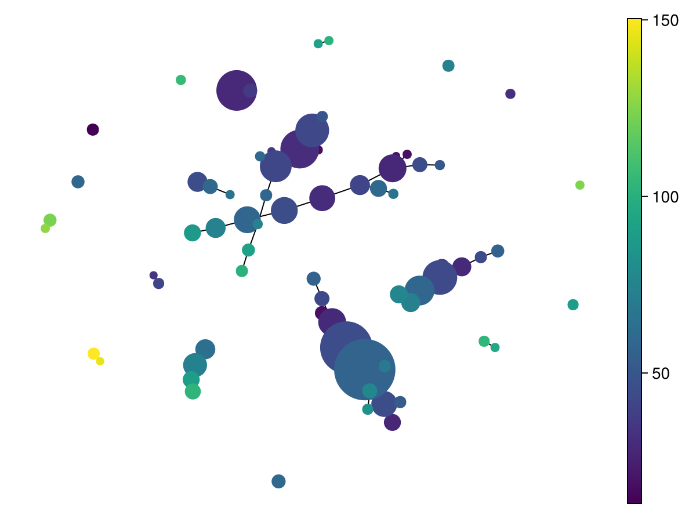
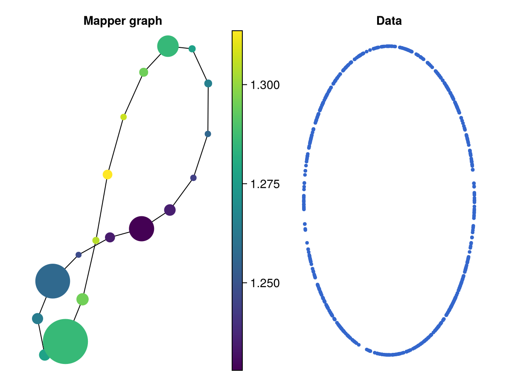

Mapper exploration
This is the flagship JuliaTDA example. We start from a table, build a metric space, pick a couple of filter functions, run the Mapper algorithm, plot the resulting graph coloured by the filter, and finally use node_statistics to discover which variables distinguish a flare — a structure branching off the dense core of the data. We close with the interactive mapper_explorer.
A table to explore
Any Tables.jl-compatible source works. Here we use a plain NamedTuple of columns — a DataFrame would behave identically. The data is a circle of points; we also carry a derived radius column r to summarise later.
using JuliaTDA
using JuliaTDA.ImageCovers, JuliaTDA.IntervalCovers, JuliaTDA.Refiners, JuliaTDA.Nerves
using CairoMakie
using Statistics: mean, std
using Random
CairoMakie.activate!(type = "png")
const DS = JuliaTDA.MetricSpaces.Datasets # the Datasets submodule of MetricSpaces
Random.seed!(42)
n = 600
base = DS.sphere(n) # n points on a circle
tbl = (x = [p[1] for p in base],
y = [p[2] for p in base],
r = [sqrt(p[1]^2 + p[2]^2) for p in base])Because JuliaTDA depends on Tables directly, the Tables.jl integration is already loaded — euclidean_space turns the numeric columns into a metric space, one point per row:
X = euclidean_space(tbl; cols = (:x, :y))
length(X), eltype(X)(600, StaticArraysCore.SVector{2, Float64})Choosing a filter
A filter is any function X → ℝ used to drive the cover. MetricSpaces ships several. We show two:
- eccentricity — the per-point mean distance to every other point; high for outliers, low near the centre. The single-argument
eccentricityform is exactly the Mapper filter we want. - density — here
dtm_density(robust, distance-to-measure based);kdeis also available.
ecc = eccentricity(X) # per-point eccentricity
dens = dtm_density(X; k = 10) # distance-to-measure density
kd = kde(X) # kernel density (shown for comparison)
(length(ecc), length(dens), length(kd))(600, 600, 600)Running the classical Mapper
classical_mapper takes the metric space, an image cover (R1Cover wrapping an interval cover such as Uniform), a refiner (DBscan), and a nerve (SimpleNerve). We colour each node by the mean filter value over its members.
M = classical_mapper(
X,
R1Cover(ecc, Uniform(length = 10, expansion = 0.3)),
DBscan(),
SimpleNerve(),
)
mapper_plot(M; node_values = [mean(ecc[c]) for c in M.C])
The same data, but driven by the density filter instead:
M2 = classical_mapper(
X,
R1Cover(dens, Uniform(length = 10, expansion = 0.3)),
DBscan(),
SimpleNerve(),
)
mapper_plot(M2; node_values = [mean(dens[c]) for c in M2.C])
What distinguishes a node? node_statistics
Given the Mapper and the original table, node_statistics returns one row per node, with per-node summaries (mean, std, …) and a z-score of each node's mean against the global distribution for every numeric column. The z-score columns (*_z) are the quickest way to see which variable makes a node — for example the tip of a flare — stand out.
ns = node_statistics(M, tbl; stats = (mean, std))
keys(ns)(:node, :size, :x_mean, :x_std, :x_z, :y_mean, :y_std, :y_z, :r_mean, :r_std, :r_z)# The node whose `r` mean deviates most from the global radius:
flare_node = argmax(abs.(ns.r_z))
(node = ns.node[flare_node], size = ns.size[flare_node], r_z = ns.r_z[flare_node])(node = 1, size = 71, r_z = 0.0)Interactive exploration with mapper_explorer
mapper_explorer returns a MapperExplorer with a linked two-panel figure: the Mapper graph on one side, the underlying point cloud on the other. Hovering a node shows its statistics (via Makie's DataInspector), and clicking a node highlights its member points in the data panel. Its .selected_node field is an Observable you can listen to.
Interactivity (hover, click) needs an interactive Makie backend such as GLMakie (using GLMakie). The static figure below is rendered with CairoMakie just to show the layout.
using GLMakie # interactive backend
expl = mapper_explorer(M; node_values = [mean(ecc[c]) for c in M.C])
expl.figure # the linked two-panel figure
expl.selected_node # Observable{Int} — updates on click# Static render (CairoMakie) so the docs can show the layout:
expl = mapper_explorer(M; node_values = [mean(ecc[c]) for c in M.C])
expl.figure